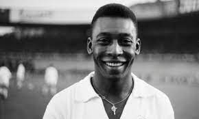
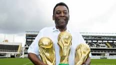
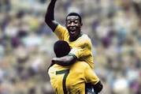

Pele's samba-like flair and his fast, fluid style revolutionised football and transfixed players and fans alike. Here's what some footballers
have said about him: “Pele was fast, agile, scored with the head,
and controlled the ball with both legs like no one else.” “He is the most complete player I ever saw. "El REI"

Pelé began playing for Santos at age 15 and the Brazil national team at 16. During his international career,
he won three FIFA World Cups: 1958, 1962 and 1970, the only player to do so and the youngest player to win
a World Cup (17).
He was nicknamed O Rei (The King) following the 1958 tournament.

Pelé celebrates scoring for Brazil during their 4-1 victory over Italy in the 1970 FIFA World Cup final.
This iconic goal and celebration led Brazil and Pelé to their third World Cup triumph.
Pelé remains the only player to win the World Cup three times.